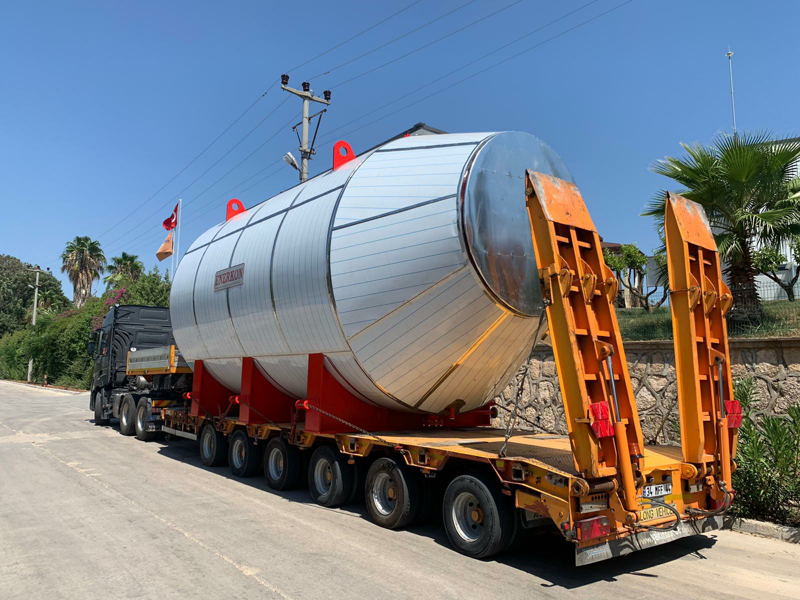

High-Efficiency Steam System Project
This project is divided into two key components: The first part entails the supply of Scotch Type Steam Boilers and auxiliary equipment, tailored for high efficiency and safety to meet HAYAT KİMYA’s steam requirements in Russia. The second part focuses on the installation of a Turbine Heat Recovery System, designed to enhance energy efficiency by harnessing waste heat for steam production, thereby supporting the company’s sustainability goals.
Project 1: Supply of Scotch Type Steam Boiler and Auxiliary Equipment

Summary: This project involves the supply of two specially designed Scotch Type Steam Boilers and related auxiliary equipment for use at HAYAT KİMYA’s facilities in Russia. The boilers are designed to meet high efficiency and safety standards and operate on natural gas.
Purpose and Methodology
The aim of the project is to supply steam boilers that will meet the steam needs of HAYAT KİMYA’s production processes, with high energy efficiency and environmental sensitivity. The boilers have a high operating pressure and a wide heating surface, making them ideal for industrial applications. During the design and manufacturing of the boilers, compliance with TS EN 12953 standards was ensured. The project includes the supply, installation, and commissioning of the boilers.
Project 2: Turbine Heat Recovery System
Summary: The second project involves the installation of a Turbine Heat Recovery System that produces steam by utilizing waste heat, with the goal of increasing HAYAT KİMYA’s energy efficiency and reducing operational costs. This system will help the facility achieve its sustainability targets.
Purpose and Methodology
This project aims to use the waste heat from turbines to produce steam. The system is designed to recover energy from high-temperature exhaust gases and use this energy in steam production. The heat recovery boiler has been developed in accordance with TS EN 12953 standards during the design and manufacturing stages. The project covers system design, equipment supply, installation, and commissioning.
Both projects are designed to support HAYAT KİMYA’s commitments to increasing operational efficiency and achieving sustainability targets. The projects aim to reduce the company’s environmental footprint by optimizing energy consumption and utilizing waste heat.